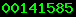
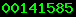

| Home |
You are visitor

|
Transferring binary data such as floats, doubles, structs, unions, etc via sockets unfortunately isn't straightforward. The problem is that different architectures have different ways to represent such things; their structs, for example, may contain "holes" to promote word alignment restrictions. In other words, although the Simple Sockets Library will easily transfer binary images (using Sread(), Sreadbytes(), and Swrite()), different hardware and/or operating systems may interpret such binaries differently.
One may transfer such entities between hosts with the same architecture and o/s generally without problems.
When one has a non-heterogeneous admixture of platforms and operating systems, one may address this binary transfer problem in several ways.
For such things as short (two-byte) and long (four-byte) integers, the sockets libraries support functions such as
| Network to Host | Host to Network | |
| ntohs() | htons() | short integers |
| ntohl() | htonl() | long integers |
to preserve meaning (in this case, byte order). The htons() and htonl() functions convert a host-format integer into a network standard form. whereas the ntohs() and ntohl() functions convert a network-format integer into the current host's standard form. However, dealing with other entities is not as straightforward.
A general method for handling floats, doubles, structs, etc involves using RPC (remote procedure call), developed by Sun. There are books on RPC (ie. "Power Programming with RPC", by John Bloomer, O'Reilly, ISBN 0-937175-77-3). There are also a number of resources on the web for transferring such data:
| SRM298 |
| RPC Descriptions |
| RPC Manual |
| Sun Playground RPC |
| Brown U's CS-92-60 Tech Report |
| Brown U's CS-93-59 Tech Report |
| Home |
You are visitor

|
| Last Modified Jul 13, 2007 03:14:27 PM | © 2007, Charles E Campbell, Jr. |